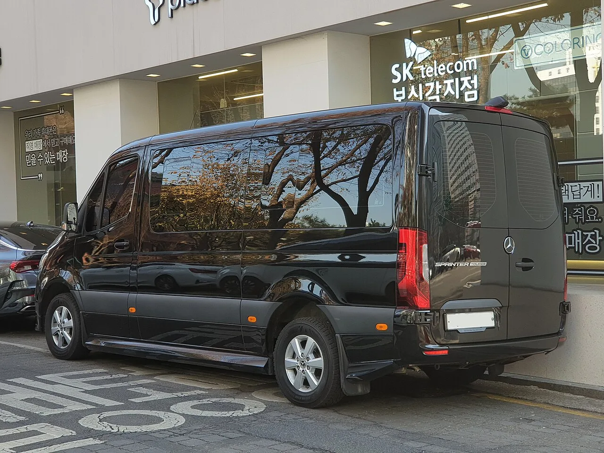
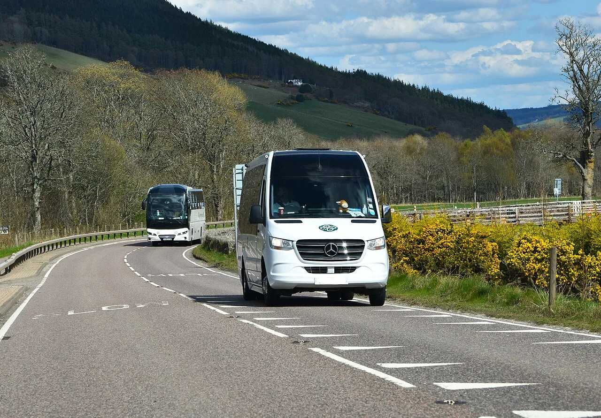
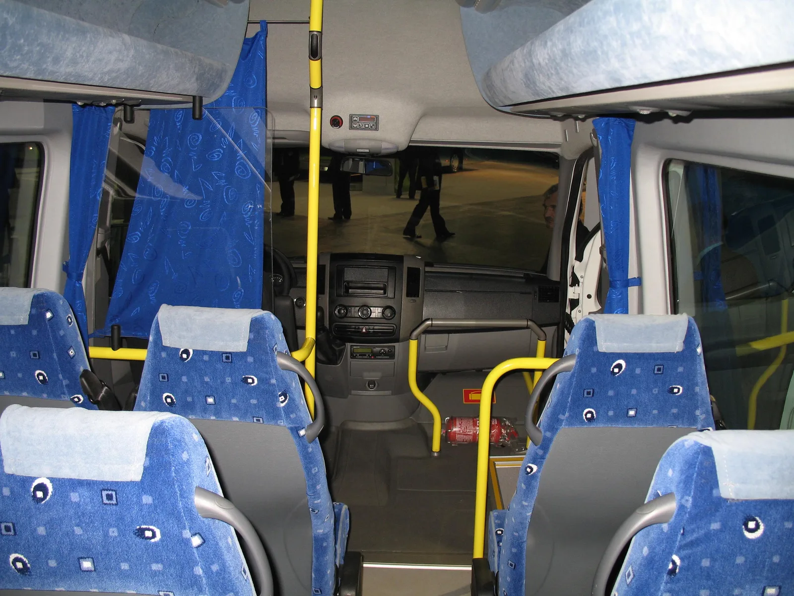
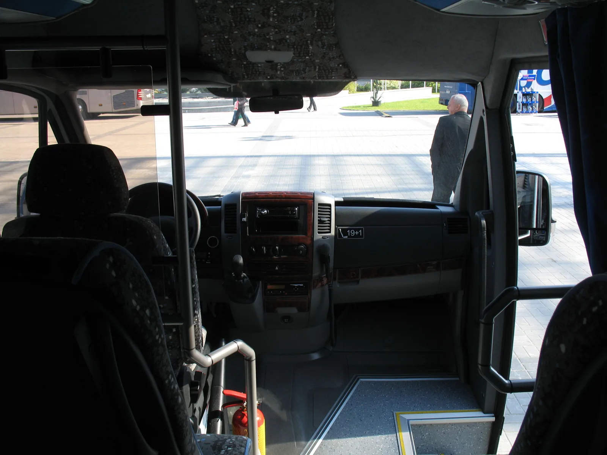
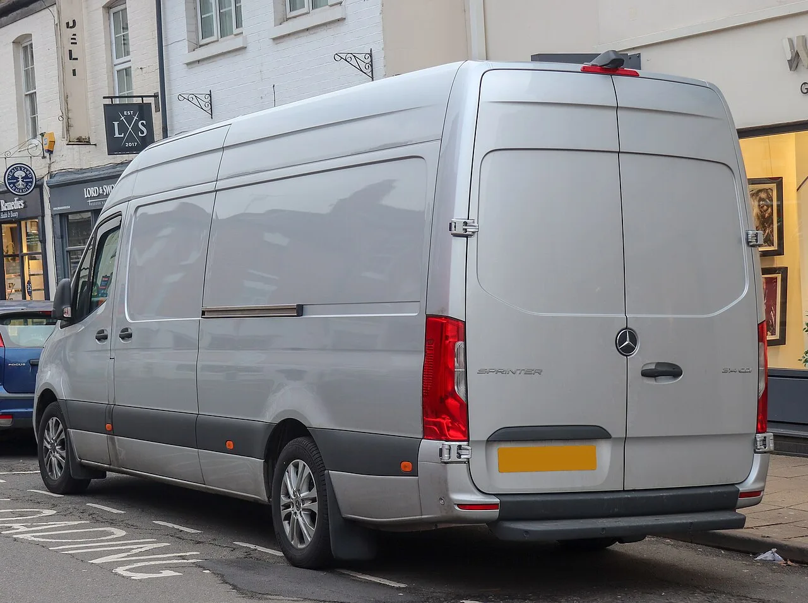
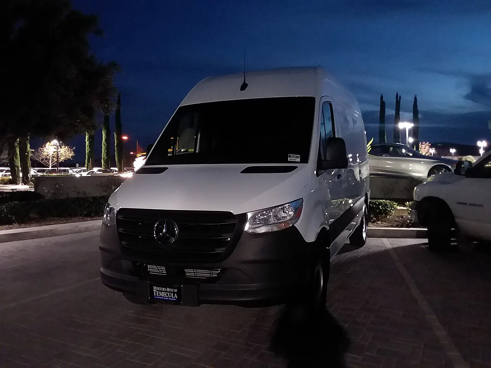

▲ 벤츠 스프린터 투어러(VS30) — 국내에서 포착된 15인승급 모델, 측후면에서 본 전장 7.3m 차체와 'SPRINTER TOURER' 엠블럼
"15명이 타는데 운전은 의외로 쉬웠다." 오토헤럴드가 메르세데스-벤츠 스프린터 15인승 모델을 시승한 뒤 내놓은 평가입니다. 전장 7,367mm, 전고 2,705mm에 달하는 이 대형 승합밴을 몰아본 오토헤럴드는 "높은 운전석 시야와 가볍게 설정된 스티어링" 덕분에 예상보다 적응이 수월했다고 전했습니다. 카프리즘은 오토헤럴드의 시승기를 바탕으로 스프린터 15인승의 외관·실내·주행감과 가격, 경쟁 모델까지 함께 짚어봤습니다.
1. 외관·크기 — 전장 7.3m의 압도적 존재감
스프린터 15인승 모델의 제원은 전장 7,367mm, 전폭 2,020mm, 전고 2,705mm, 휠베이스 4,325mm입니다. 총중량은 5,000kg에 달합니다. 국내에서 흔히 볼 수 있는 준중형 SUV 두 대를 이어붙인 것과 비슷한 길이로, 도심 도로에서도 단연 눈에 띄는 체구입니다. 큼직한 삼각별 그릴과 높은 보닛 라인이 대형 상용차 특유의 위압감을 더합니다.

▲ 실제 영업용 셔틀로 운행 중인 스프린터 — 오토헤럴드에 따르면 전장 7,367mm·전고 2,705mm의 대형 밴이다
2. 실내·좌석 구성 — 15명이 앉아도 답답하지 않은 이유
15인승답게 실내는 독립 시트 배치로 채워집니다. 고급 리무진처럼 화려한 마감 대신 내구성과 승하차 효율을 우선한 구성입니다. 오토헤럴드는 "높은 루프 덕분에 승합차 특유의 답답함은 상대적으로 덜하다"고 평가했습니다. 실제로 하이루프 사양은 실내 높이가 여유로워 성인이 서서 이동하기에도 무리가 없는 수준입니다. 다인승 셔틀이나 의전 차량으로 쓰일 경우 좌석 간격과 승하차 동선이 중요한데, 스프린터는 슬라이딩 도어 폭을 넉넉히 확보해 다수 인원의 빠른 승하차를 돕습니다.

▲ 스프린터 섀시 기반 미니버스(폴란드 Autosan 개조, 2008년형)의 실내 좌석 배치 예시 — 시승 차량과 세대는 다르지만 독립 시트가 통로 양옆으로 줄지어 배치되는 구조는 동일하다

▲ 스프린터 기반 미니버스(폴란드 AMZ 개조, 2010년형)의 계기판 — 대시보드에 붙은 "19+1" 정원 표시 스티커가 다인승 셔틀 용도임을 보여준다
3. 승차감·조향감 — 몸집은 큰데 운전은 가볍다
오토헤럴드의 시승 소감에서 가장 흥미로운 대목은 운전 체감입니다. 7m가 넘는 거구임에도 "높은 운전석 시야와 가볍게 설정된 스티어링" 덕분에 예상보다 적응이 수월했다고 합니다. 다만 4,325mm에 달하는 긴 휠베이스 탓에 교차로나 좁은 커브에서는 회전 반경을 충분히 확보해야 한다는 단서도 달았습니다. 더 실질적인 제약은 따로 있었습니다. 2,705mm의 전고는 "일반적인 지하주차장이나 일부 공원 주차장 이용을 사실상 어렵게" 만든다는 것입니다. 결국 운전 자체보다 이동 경로와 주차 장소를 미리 확인하는 일이 실사용에서는 더 큰 변수라는 게 오토헤럴드의 분석입니다.
4. 파워트레인 — OM654 디젤과 9G-TRONIC의 조합
엔진은 OM654 1.95L 디젤로 최고출력 190마력, 최대토크 440Nm을 냅니다. 변속기는 9단 자동인 9G-TRONIC이 맞물립니다. 5톤에 가까운 총중량을 감안하면 스펙상 수치가 압도적이지는 않지만, 오토헤럴드는 이 조합이 거대한 차체를 "차분하게" 움직인다고 평가했습니다. 급가속보다는 일정한 속도로 다수 승객을 안정적으로 실어 나르는 데 초점을 맞춘 세팅으로, 관광버스나 셔틀 운행처럼 정속 주행이 많은 용도에 적합한 성격입니다.

▲ 스프린터 후면부(사진은 패널밴 사양) — OM654 1.95L 디젤과 9G-TRONIC 조합으로 440Nm의 토크를 낸다
5. 가격·경쟁 모델 비교 — 쏠라티·트랜짓과 어떻게 다른가
오토헤럴드가 시승한 스프린터 15인승 모델의 가격은 9,990만원부터 시작합니다. 국내 승합차 시장에서 직접 비교 대상으로 꼽히는 현대 쏠라티는 15인승 스탠다드 트림 기준 6,743만원으로, 스프린터보다 3,000만원 이상 저렴합니다. 쏠라티는 2.5L 디젤(170마력)과 8단 자동변속기를 얹고 전방 충돌방지 보조, 차로이탈 경고, 스마트 크루즈 컨트롤 등을 기본 제공합니다. 포드 트랜짓 15인승은 한때 국내에 정식 수입된 적이 있지만 현재는 포드코리아의 정식 판매 라인업에서 빠져 있어, 병행수입 등 제한적인 경로로만 국내 유입되는 상황입니다.
| 항목 | 벤츠 스프린터 | 현대 쏠라티 | 포드 트랜짓 |
|---|---|---|---|
| 가격(15인승 기준) | 9,990만원~ | 6,743만원~ | 국내 정식 미판매 |
| 엔진 | 1.95L 디젤(OM654) | 2.5L 디젤 | 2.0L 디젤(해외 기준) |
| 출력 | 190마력·440Nm | 170마력 | 시장별 상이 |
| 변속기 | 9단 자동(9G-TRONIC) | 8단 자동 | 시장별 상이 |
| 국내 판매 방식 | 정식 수입 | 국산 | 병행수입 위주 |
벤츠코리아 공식 사이트에서 스프린터 라인업과 트림별 사양을 확인할 수 있습니다. 벤츠코리아 스프린터 페이지에서 확인 가능

▲ 스프린터 전면부 디테일 — 큼직한 삼각별 그릴이 대형 밴의 존재감을 드러낸다
6. 영업용 수요 전망 — 렌터카·관광·기업 셔틀 시장을 겨냥하다
스프린터 15인승은 처음부터 개인 소비자보다 렌터카, 관광 셔틀, 기업 의전 차량 등 영업용 시장을 정조준한 모델입니다. 9,990만원부터 시작하는 가격표는 일반 소비자에게는 부담스럽지만, 다인승 이동을 상시적으로 운영해야 하는 사업자 입장에서는 벤츠 브랜드의 신뢰도와 정비 인프라, 넉넉한 실내 공간이 투자 대비 값어치를 하는 요소로 꼽힙니다. 다만 오토헤럴드가 지적한 것처럼 2,705mm 전고로 인한 지하주차장 이용 제약은 실제 운영 노선을 짤 때 반드시 고려해야 할 변수입니다. 쏠라티 대비 3,000만원 이상 높은 가격 차이를 감수할 만큼의 프리미엄 포지셔닝이 통할지, 국내 영업용 승합차 시장의 다음 흐름을 지켜볼 대목입니다.
영업용으로 대형 밴을 도입할 때는 차량 가격 외에 유지비 구조도 함께 따져봐야 합니다. 스프린터는 수입차인 만큼 정기 점검·부품 비용이 국산 쏠라티보다 높게 형성되는 경우가 많고, 5,000kg급 총중량 차량은 자동차보험료와 자동차세 산정에서도 대형 승합차 구간이 적용됩니다. 이 때문에 렌터카·셔틀 운영 업체들은 차량을 일시불로 구매하기보다 3~5년 단위 운용리스나 장기렌트 형태로 도입하는 경우가 많습니다. 리스를 이용하면 초기 투자 부담을 낮추고 매달 정액 비용으로 예산을 관리할 수 있는 대신, 총 지불 비용은 일시불 구매보다 늘어날 수 있어 예상 운행 거리와 보유 기간을 미리 계산해보는 편이 유리합니다. 벤츠코리아 및 공식 딜러사를 통해 사업자 대상 금융·리스 프로그램을 별도로 안내받을 수 있습니다.